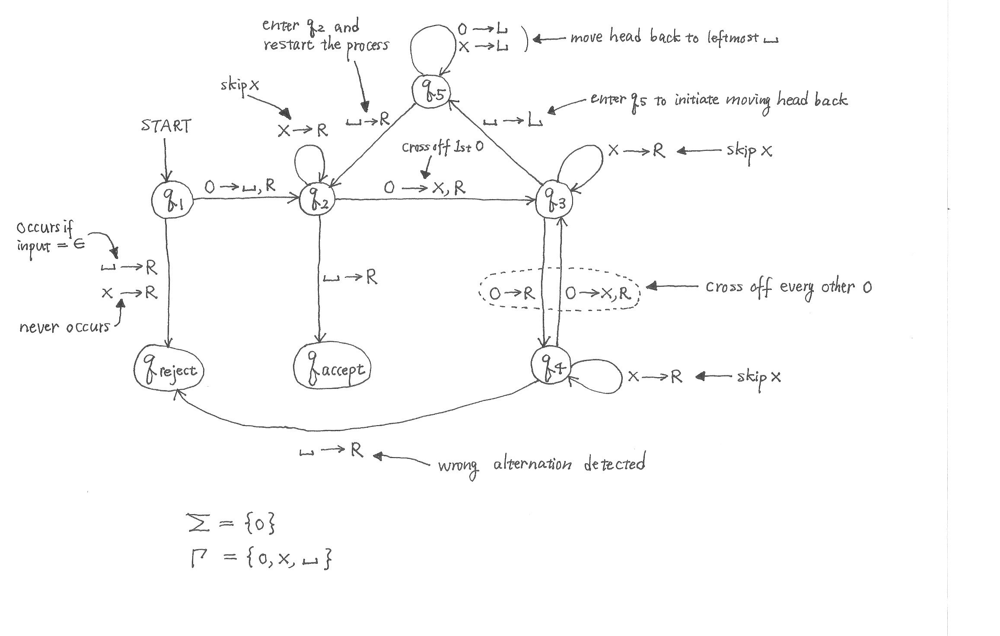

DTM to decide { 02n | n ≥ 0 }, the powers of 2 in unary notation (Example 3.7 in the book)
-
Keep dividing by 2 and it never becomes an odd integer until 1.
-
Implement division by 2 by crossing off every other 0.
-
The number of remaining 0's on the tape is an even integer until 1 is reached.
Algorithm
"_" denotes the blank symbol.
start in q1
blank 1st 0 to mark the leftmost cell and enter q2
L: let k = the # of 0's on the tape, including the leftmost "_"
scan the tape to right, alternating between q3 and q4 to cross of every other 0
if no 0 is found in the scan, accept
if k is an odd integer > 1, "_" will be found on q4 and reject
otherwise "_" will be found on q3 and continue
enter q5 and move the head back to the leftmost "_"
enter q2 and goto L

The following is the transition sequence on the input 00000000.
q100000000 |−
_q20000000 |−
_xq3000000 |−
_x0q400000 |−
_x0xq30000 |−
_x0x0q4000 |−
_x0x0xq300 |−
_x0x0x0q40 |−
_x0x0x0xq3_ |−
_x0x0x0q5x |−
_x0x0xq50x |−
_x0x0q5x0x |−
_x0xq50x0x |−
_x0q5x0x0x |−
_xq50x0x0x |−
_q5x0x0x0x |−
q5_x0x0x0x |−
_q2x0x0x0x |−
_xq20x0x0x |−
_xxq3x0x0x |−
_xxxq30x0x |−
_xxx0q4x0x |−
_xxx0xq40x |−
_xxx0xxq3x |−
_xxx0xxxq3_ |−
_xxx0xxq5x |−
_xxx0xq5xx |−
_xxx0q5xxx |−
_xxxq50xxx |−
_xxq5x0xxx |−
_xq5xx0xxx |−
_q5xxx0xxx |−
q5_xxx0xxx |−
_q2xxx0xxx |−
_xq2xx0xxx |−
_xxq2x0xxx |−
_xxxq20xxx |−
_xxxxq3xxx |−
_xxxxxq3xx |−
_xxxxxxq3x |−
_xxxxxxxq3_ |−
_xxxxxxq5x |−
_xxxxxq5xx |−
_xxxxq5xxx |−
_xxxq5xxxx |−
_xxq5xxxxx |−
_xq5xxxxxx |−
_q5xxxxxxx |−
q5_xxxxxxx |−
_q2xxxxxxx |−
_xq2xxxxxx |−
_xxq2xxxxx |−
_xxxq2xxxx |−
_xxxxq2xxx |−
_xxxxxq2xx |−
_xxxxxxq2x |−
_xxxxxxxq2_ |−
_xxxxxxx_qaccept_
The following is the transition sequence on the input 000000.
q1000000 |−
_q200000 |−
_xq30000 |−
_x0q4000 |−
_x0xq300 |−
_x0x0q40 |−
_x0x0xq3_ |−
_x0x0q5x |−
_x0xq50x |−
_x0q5x0x |−
_xq50x0x |−
_q5x0x0x |−
q5_x0x0x |−
_q2x0x0x |−
_xq20x0x |−
_xxq3x0x |−
_xxxq30x |−
_xxx0q4x |−
_xxx0xq4_ |−
_xxx0x_qreject_
There is a reason the above transition sequences are displayed vertically in tabular form.
When we prove Cook-Levin theorem – one of the most important theorems in this course –
we encode transition sequences in tabular form by Boolean formulas to show that
all NP problems are reducible to Boolean-formula satisfiability problem.